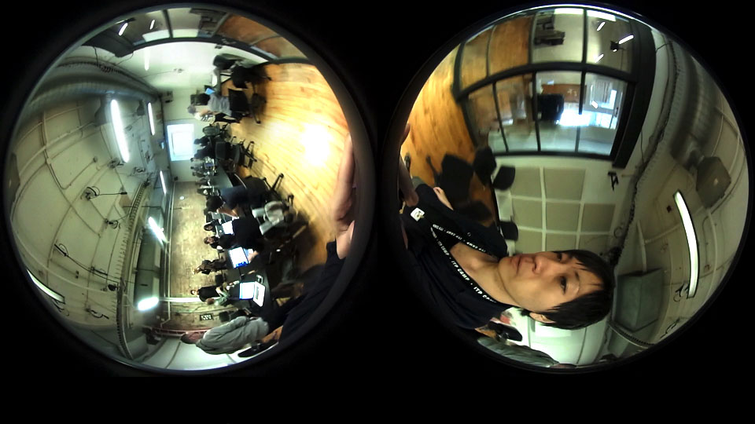
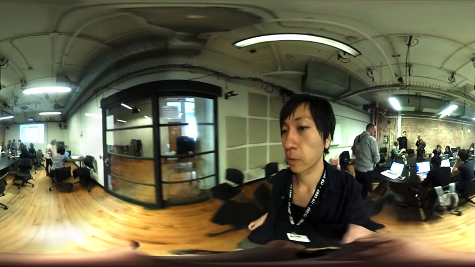

360 Video Introduction
Interaction Design, Education
Tools Used : Richo Theta S, Basic App RICOH THETA, Spatial Media Metadata Injector, After Effects
This is the first test for 360 degree camera that is Richo Theta S and composed into the movie with after effects. Making the movies would be felt very easier for you guys than before you make it. I will note the process of how I finised the 360 degree movie accessiable to people.
Camera with After Effects
Tutorials:
I had two conversions till uploading a movie available for 360 degree on youtube and we actually can have some options to finish your movie by which camera was used (such as gopro). The test in itp, I happily could use the 360 camera for free thanks to ITP/New York University.
Conversion 1:
I got a separated movie right after shooting with Theta S, I need the first conversion to combine two round movies into one movie. I used Basic App RICOH THETA.

Conversion 2:
Successfuly I could get the image above and then I added some effects to the one with after effects(set 3D axis in the edit). The next stop was the last conversion to upload on youtube. I used the app called as "spatial media metadata injector" I got ready to move on to the last process.

Here is the astonishing 6 successive-go pro settings for 360 as a reference.

← Back to Home